Les thèmes
Art : série générale et technologiques
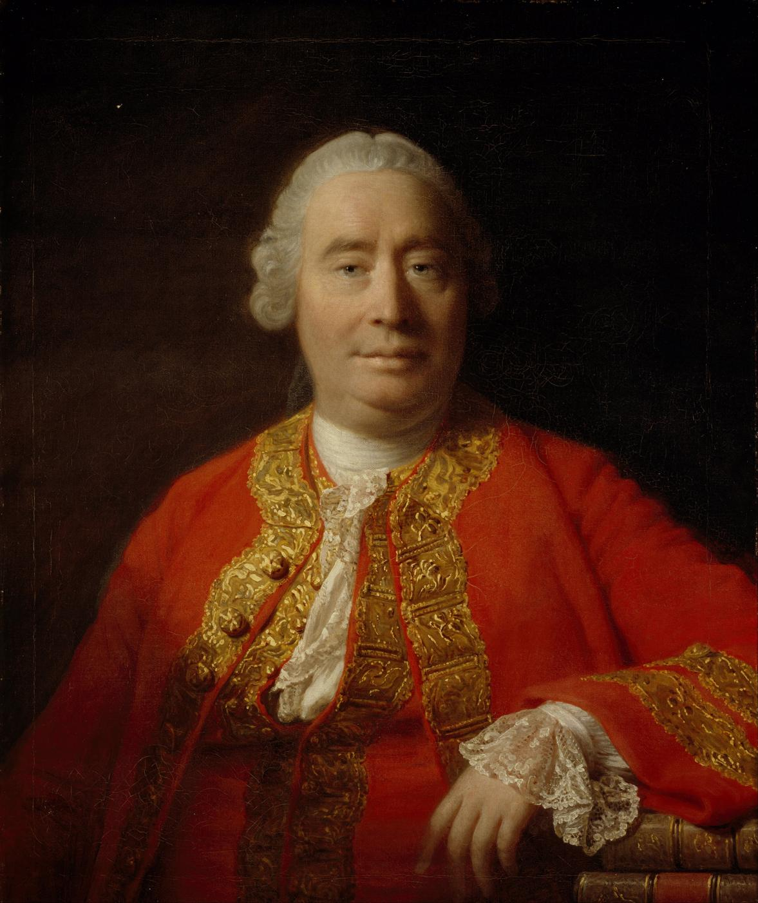
Hume : opinion et sentiment
Peut-on se tromper sur la beauté ? Hume distingue l’opinion du sentiment.
Ouvrir la pageBourdieu : l’idéologie charismatique
Le goût est-il un don naturel ou le produit de l’éducation ?
Ouvrir la page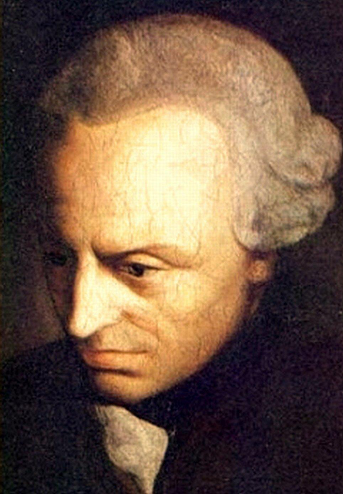
Kant : le jugement de goût
« C’est beau pour moi » : peut-on dire cela du beau ?
Ouvrir la pageArendt : l’œuvre d’art
Qu’est-ce qui distingue une œuvre d’art d’un objet d’usage ?
Ouvrir la pageHume : la délicatesse du goût
Si tous les goûts ne se valent pas, qui est un bon juge ?
Ouvrir la pageBonheur : série générale
Kant : la difficulté de définir le bonheur
Tout le monde veut être heureux, mais personne ne sait précisément ce qu’il veut.
Ouvrir la page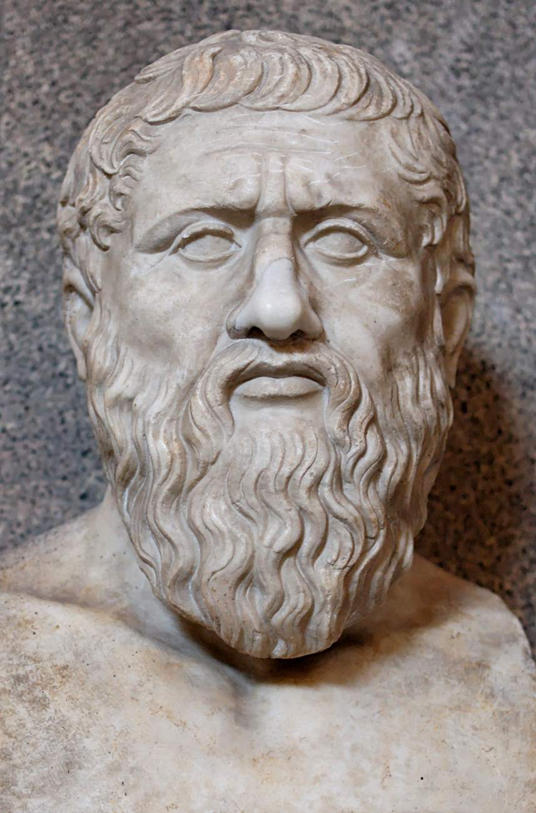
Calliclès et Socrate : l’image des tonneaux
Vivre en comblant sans cesse ses désirs, est-ce vivre heureux ?
Ouvrir la page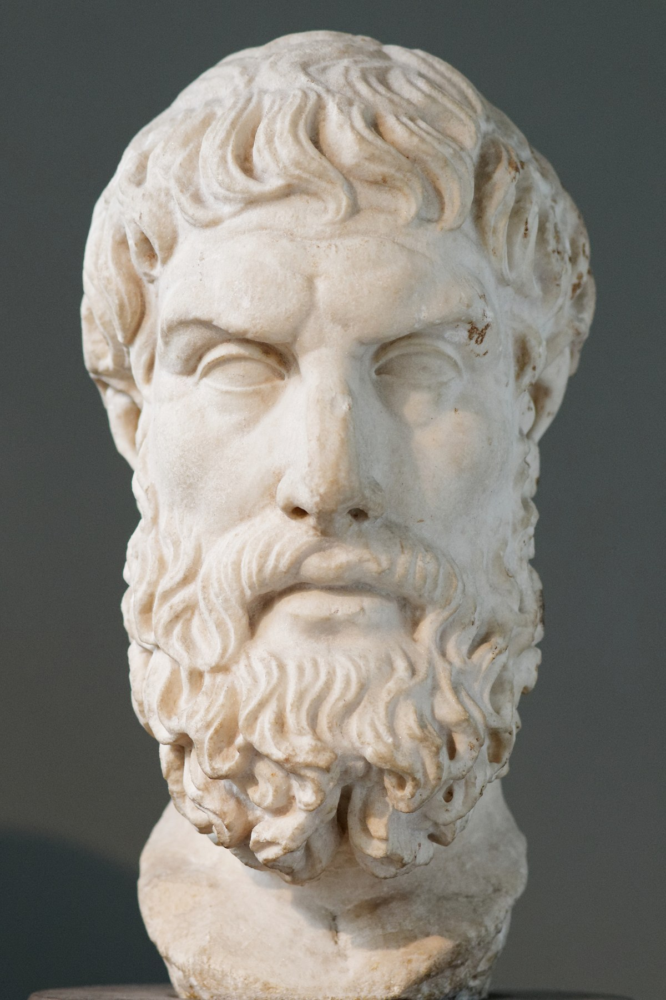
Épicure : les différents désirs
Pour être heureux, faut-il tout désirer ou apprendre à trier ses désirs ?
Ouvrir la page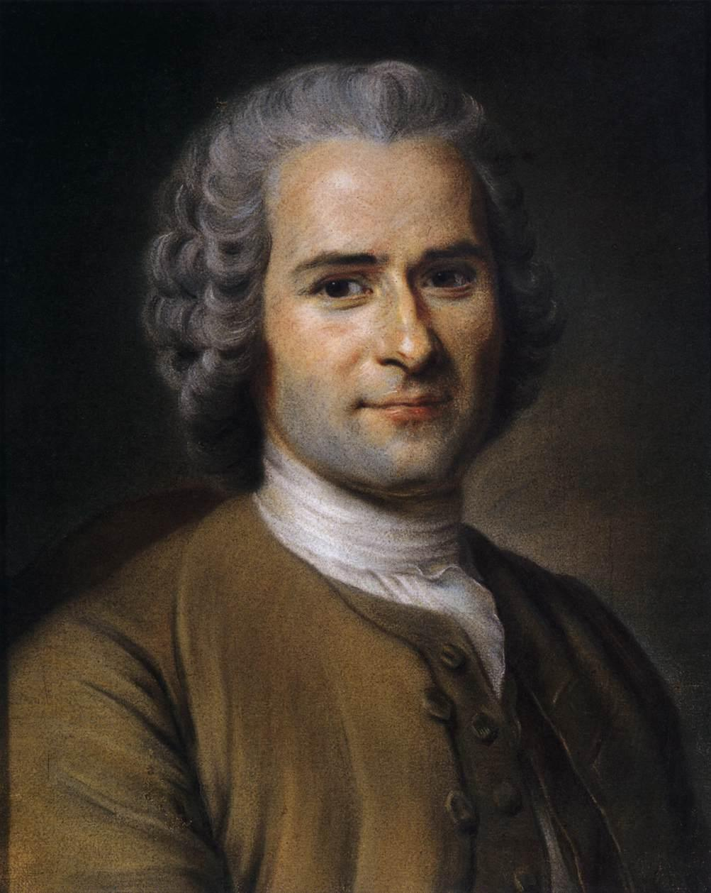
Rousseau : les désirs et les facultés
Pourquoi sommes-nous malheureux, et comment le devenir moins ?
Ouvrir la page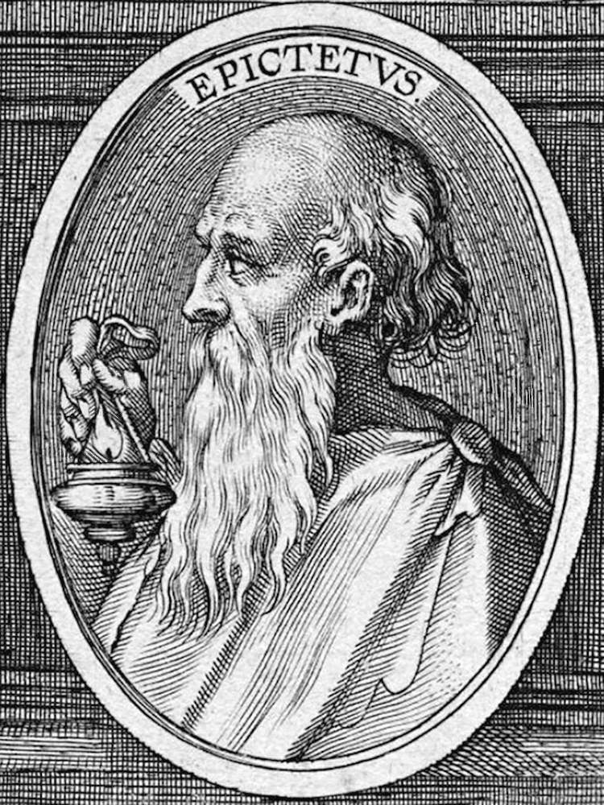
Épictète : les opinions troublent les hommes
Ce ne sont pas les choses qui nous troublent, mais l’idée que nous nous en faisons.
Ouvrir la pageEpictète : ce qui dépend de nous
Liberté et bonheur selon le Manuel : la frontière entre ce que nous maîtrisons et ce qui nous échappe.
Ouvrir la page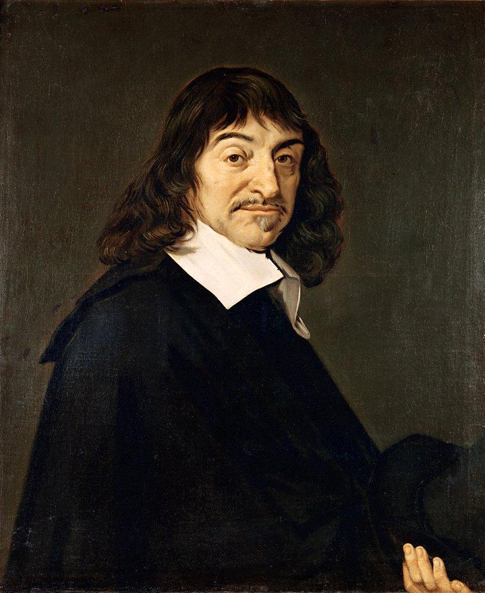
Épictète et Descartes : acceptation et grandeur d’âme
Faut-il vouloir que les choses arrivent comme elles arrivent ? Descartes y répond avec Élisabeth.
Ouvrir la pageKant : se rendre digne du bonheur
La morale nous apprend-elle à être heureux ?
Ouvrir la page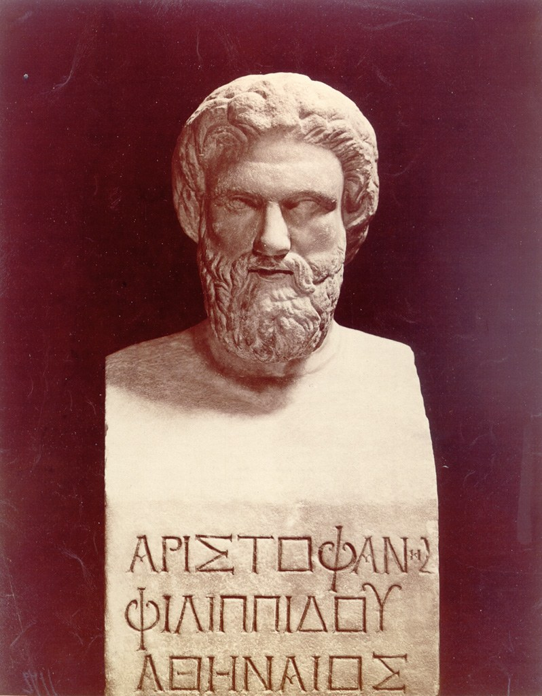
Aristophane : le mythe des moitiés séparées
Pourquoi cherchons-nous quelqu’un d’autre pour être heureux ?
Ouvrir la page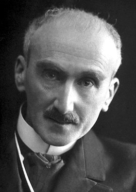
Bergson : la joie, signe de la création
Quelle différence entre plaisir et joie ?
Ouvrir la pageConscience : série générale
Descartes : du doute au cogito
Du doute des sens au mauvais génie, jusqu’à la première certitude : « je pense, donc je suis ».
Ouvrir la page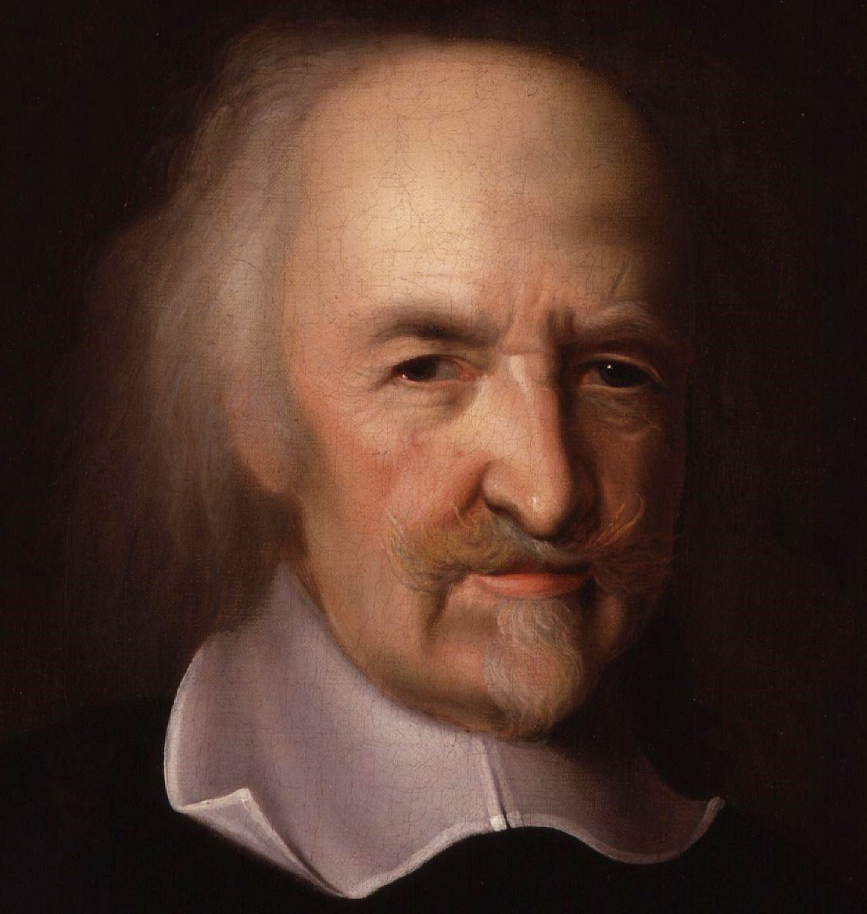
Hobbes : objection au cogito de Descartes
« Je pense, donc je suis » : peut-on en conclure que je suis une pensée, un esprit, une âme ?
Ouvrir la pageHume : le moi n’est qu’un faisceau de perceptions
En regardant en moi-même, que trouve-t-on ? Un moi simple et continu, ou seulement des perceptions ?
Ouvrir la pageSartre : condamné à être libre
Si Dieu n’existe pas, l’homme est-il libre ou perdu ? Peut-il invoquer ses passions comme excuses ?
Ouvrir la pageDevoir : série générale
Le devoir
Société, nature humaine ou raison : d’où vient le « je dois » ? De Nietzsche à Kant et Sartre.
Ouvrir la pageKant : la bonne volonté et le devoir
Qu’est-ce qui est bon sans restriction ? Et comment savoir si l’on agit par devoir ?
Ouvrir la pageRousseau : la pitié, sentiment naturel
Avant toute loi, qu’est-ce qui retient l’homme de faire du mal à autrui ?
Ouvrir la pageRousseau : la conscience, instinct divin
Faut-il être savant pour être moral ? Rousseau confie à la conscience le jugement du bien et du mal.
Ouvrir la page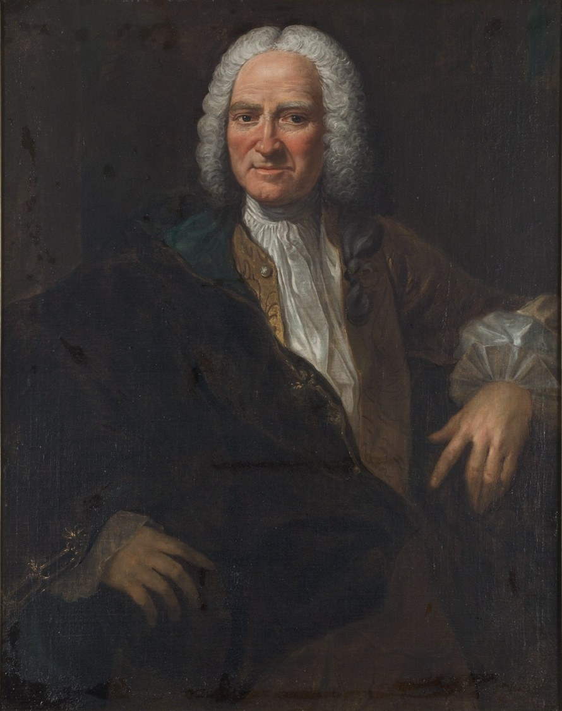
D’Holbach : fonder la morale sur la nature
Faut-il un dieu pour fonder la morale ?
Ouvrir la page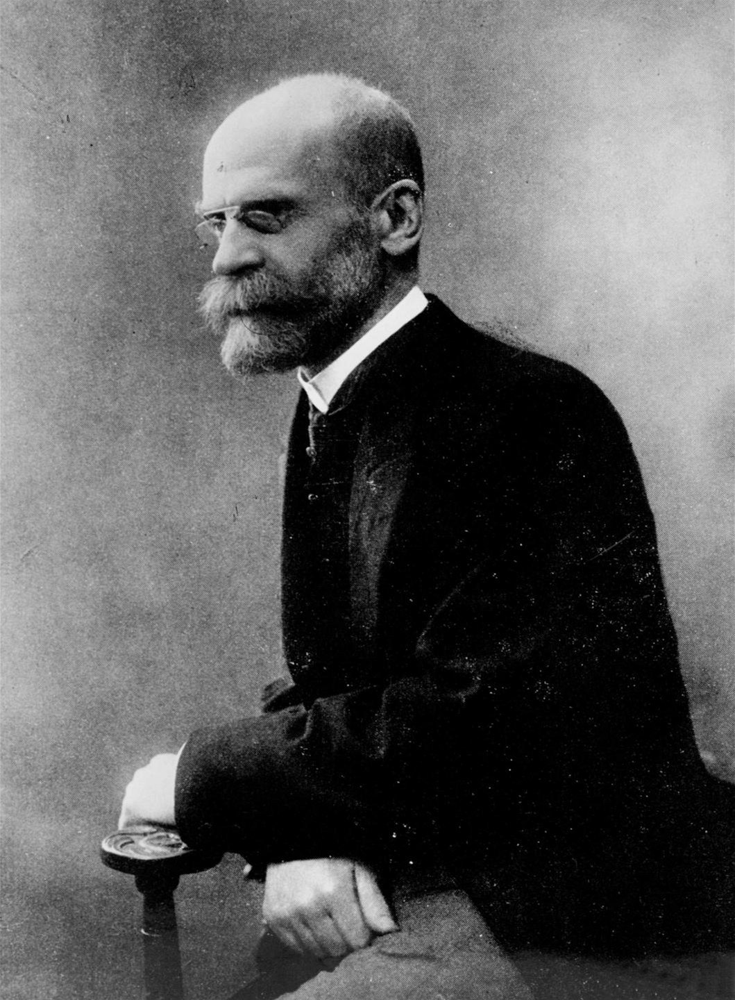
Durkheim : le devoir comme fait social
Quand ma conscience me parle, qui parle en moi ?
Ouvrir la page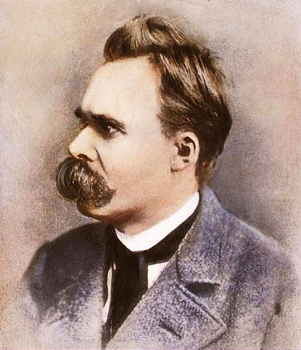
Nietzsche : morale du troupeau et mauvaise conscience
La morale est-elle l’expression de l’instinct du troupeau ? D’où vient la mauvaise conscience ?
Ouvrir la page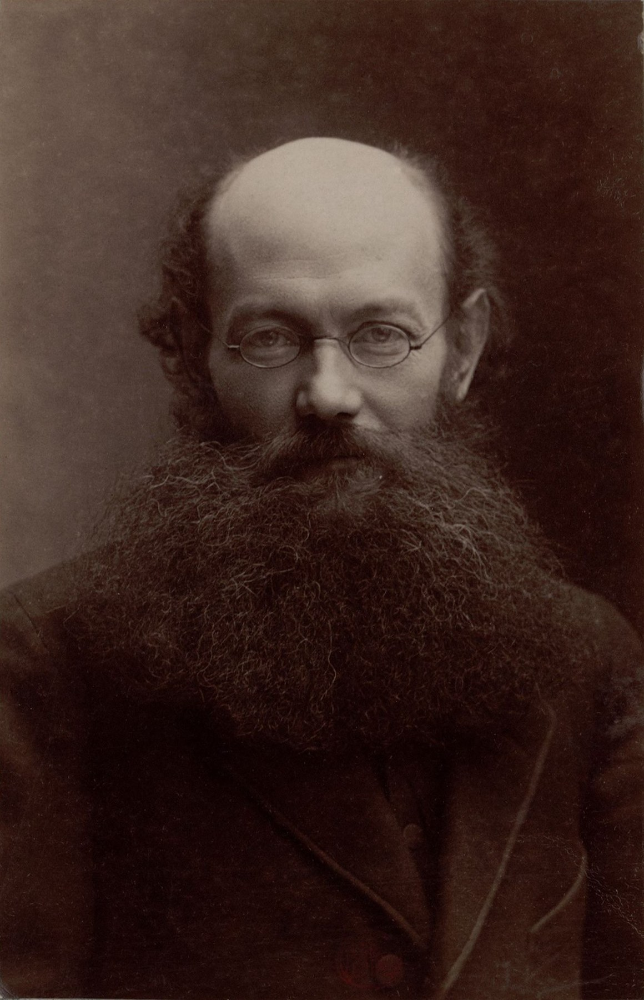
Kropotkine : pourquoi serais-je moral ?
Quelles raisons ai-je d’être moral, si l’on réfute une à une les autorités qui l’exigent ?
Ouvrir la pageSartre : le dilemme moral d’un jeune homme
Rester auprès de sa mère ou rejoindre la Résistance : qui peut aider à choisir ?
Ouvrir la pageArendt : Eichmann et l’impératif catégorique
Eichmann s’est réclamé de Kant. Qu’a-t-il fait de l’idée de devoir ?
Ouvrir la pageÉtat : série générale
Hobbes : l’état de nature, guerre de tous contre tous
Que serait la vie des hommes sans pouvoir commun ?
Ouvrir la pageNietzsche : l’État, le plus froid des monstres froids
L’État prétend être le peuple : n’est-ce pas un mensonge ?
Ouvrir la pageArendt : Eichmann et l’impératif catégorique
Eichmann s’est réclamé de Kant. Qu’a-t-il fait de l’idée de devoir ?
Ouvrir la pageChapoutot : les nazis, ennemis de l’État ?
Le IIIe Reich était-il un État fort ? Pourquoi les nazis se disent-ils hostiles à l’État ?
Ouvrir la pageInconscient : série générale
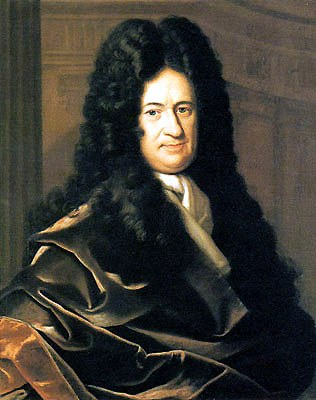
Leibniz : les petites perceptions
Entendre la mer : comment percevoir un bruit dont aucune vague ne se distingue ?
Ouvrir la page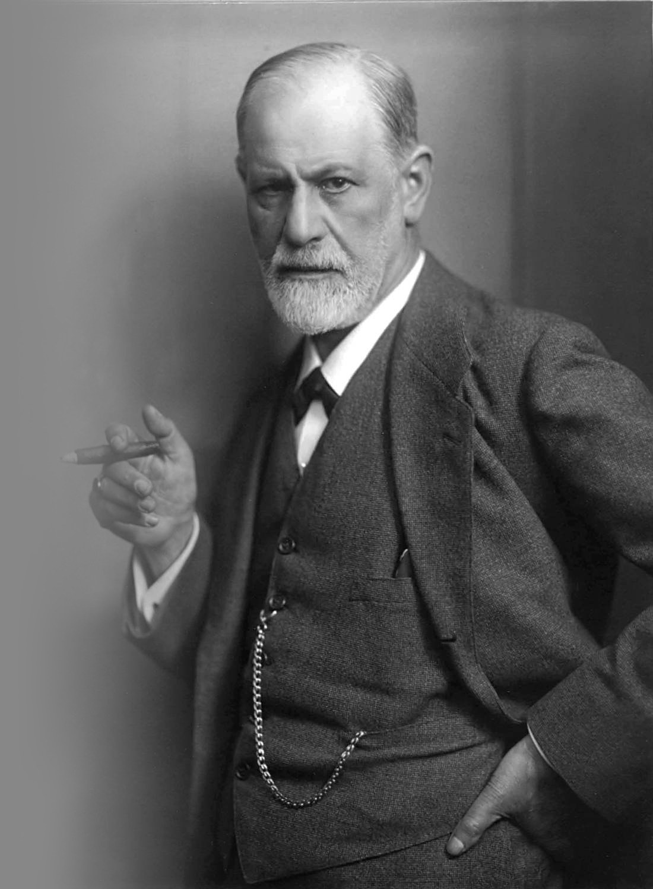
Freud : l’hypothèse de l’inconscient
Comment affirmer l’existence d’un psychisme dont nous ne sommes pas conscients ?
Ouvrir la pageFreud : le cas d’Élisabeth
Des douleurs aux jambes sans cause organique : que révèle l’analyse ?
Ouvrir la pageSartre : condamné à être libre
Si Dieu n’existe pas, l’homme est-il libre ou perdu ? Peut-il invoquer ses passions comme excuses ?
Ouvrir la pageJustice : série générale et technologiques
Platon : le mythe de l’anneau de Gygès
Si vous pouviez agir sans être vu, resteriez-vous juste ?
Ouvrir la pagePlaton : pourquoi avoir des lois ?
Même un homme habile ne peut gouverner sans lois : pourquoi ?
Ouvrir la pageHobbes : qu’est-ce qu’une bonne loi ?
Une loi peut-elle être injuste ? Et à quoi reconnaît-on une bonne loi ?
Ouvrir la pageSmith : la justice et la négligence
Faut-il punir celui qui n’a fait de mal à personne mais aurait pu en faire ?
Ouvrir la pageRawls : l’intuitionnisme en matière de justice
Comment arbitrer entre plusieurs principes de justice qui s’opposent ?
Ouvrir la pageLangage : série générale
Descartes : le langage, propre de l’homme
Les animaux ne parlent pas : est-ce faute d’organes, ou faute de pensée ?
Ouvrir la page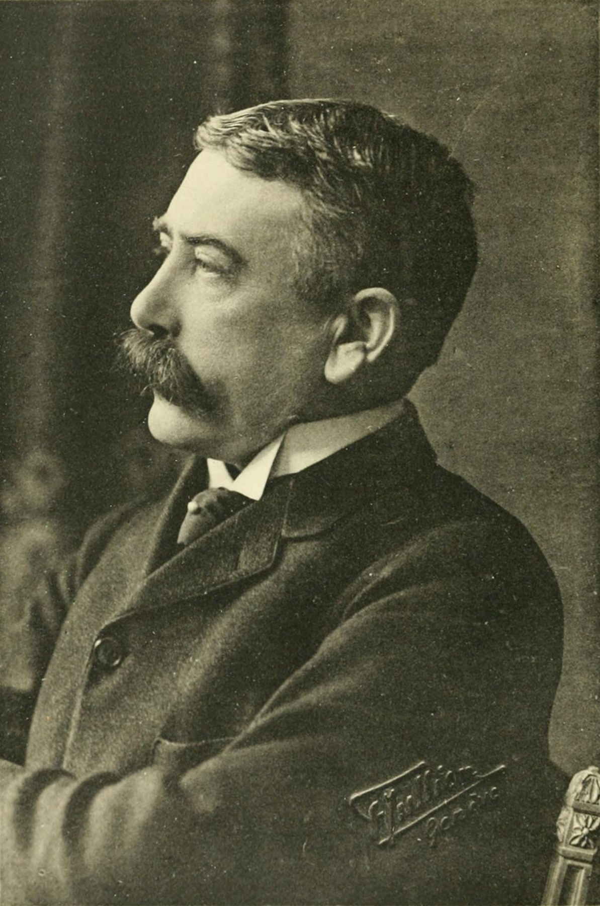
Saussure : l’arbitraire du signe
Pourquoi le mot « sœur » ? Y a-t-il un lien naturel entre un mot et ce qu’il désigne ?
Ouvrir la page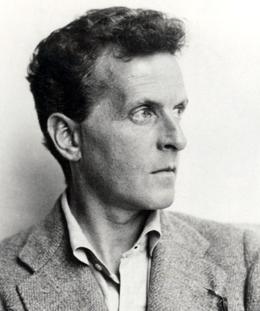
Wittgenstein : usage et signification
D’où les mots tirent-ils leur sens ?
Ouvrir la pageAustin : la performativité
Dire « oui » au mariage : est-ce décrire ou accomplir quelque chose ?
Ouvrir la pageKlemperer : la langue du Troisième Reich
La propagande agit-elle par les discours ou par les mots eux-mêmes ?
Ouvrir la pageLiberté : série générale et technologiques
L’âne de Buridan
Un âne entre l’eau et la nourriture : dix-huit arguments à passer au crible, et la liberté d’indifférence.
Ouvrir la pageLe déterminisme social
Reproduction sociale, capital culturel, habitus, et la table de mobilité de l’Insee à explorer.
Ouvrir la pageSpinoza : l’ignorance des causes déterminantes
La pierre lancée qui se croit libre : la liberté comme illusion, d’après la Lettre à Schuller.
Ouvrir la pageLes stéréotypes
Images préconçues, menace du stéréotype et expérience de Steele et Aronson.
Ouvrir la pageEpictète : ce qui dépend de nous
Liberté et bonheur selon le Manuel : la frontière entre ce que nous maîtrisons et ce qui nous échappe.
Ouvrir la pageNature : série générale et technologiques
Genèse : la domination de l’homme sur la nature
L’homme est créé à l’image de Dieu : cette ressemblance lui donne-t-elle un droit sur tout le vivant ?
Ouvrir la page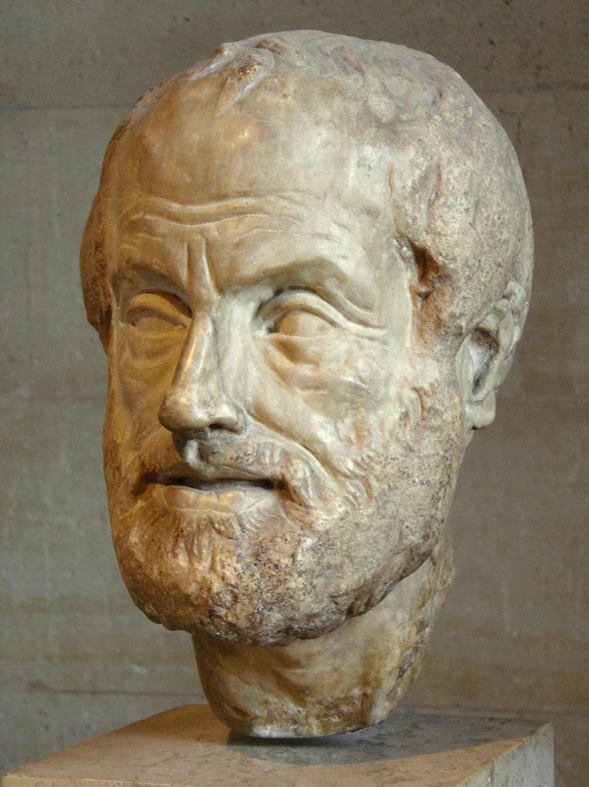
Aristote : voix, parole et langage animal
Les animaux communiquent : en quoi la parole de l’homme est-elle différente ?
Ouvrir la page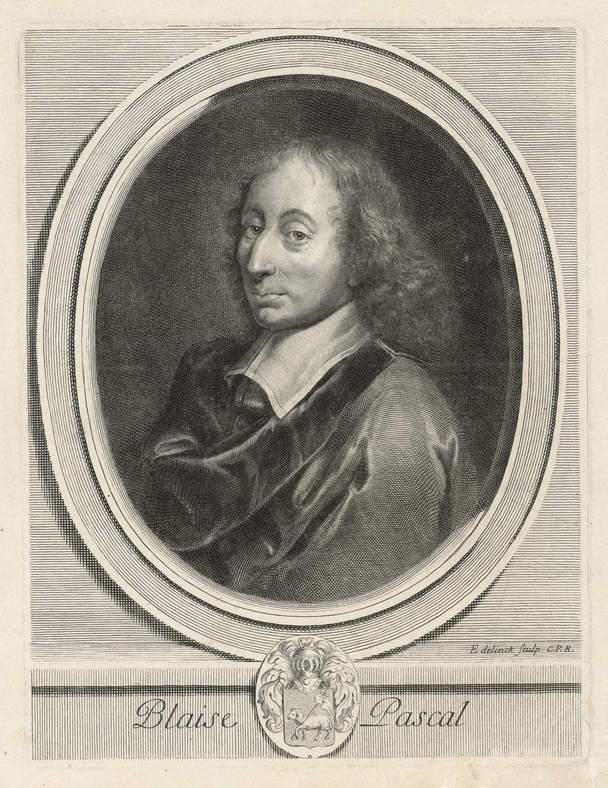
Pascal : ruches et hommes
Les abeilles construisent leurs ruches sans les perfectionner. L’homme, lui, progresse. Pourquoi ?
Ouvrir la pageDescartes : maîtres et possesseurs de la nature
La connaissance physique doit-elle seulement expliquer le monde, ou aussi nous rendre utiles à tous ?
Ouvrir la page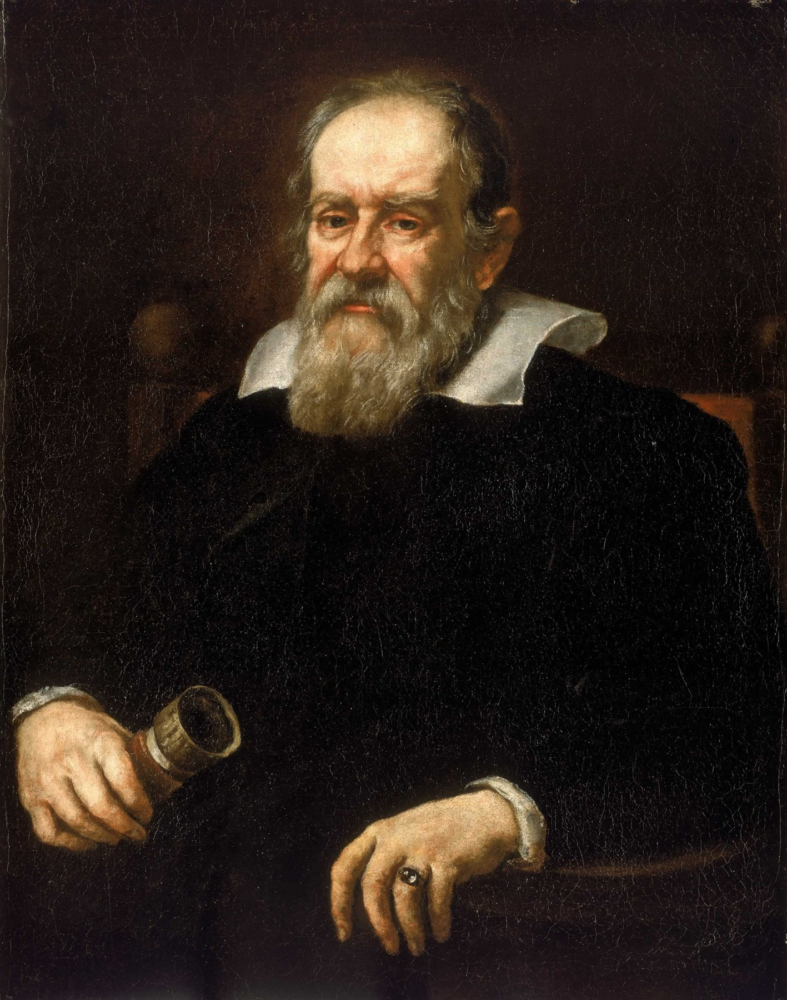
Galilée : l’univers, un livre écrit en langue mathématique
Comment lire la nature ? En apprenant d’abord la langue dans laquelle elle est écrite.
Ouvrir la page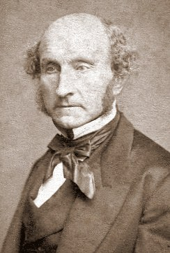
Mill : faut-il suivre la nature ?
La nature doit-elle servir de modèle à nos actions ?
Ouvrir la page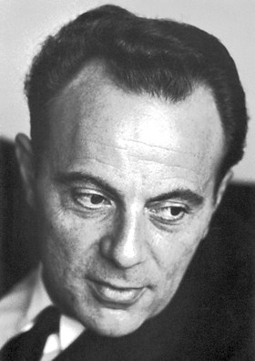
Jacob : le refus de la finalité comme principe explicatif
Les êtres vivants semblent orientés vers un but : faut-il y voir un dessein ?
Ouvrir la page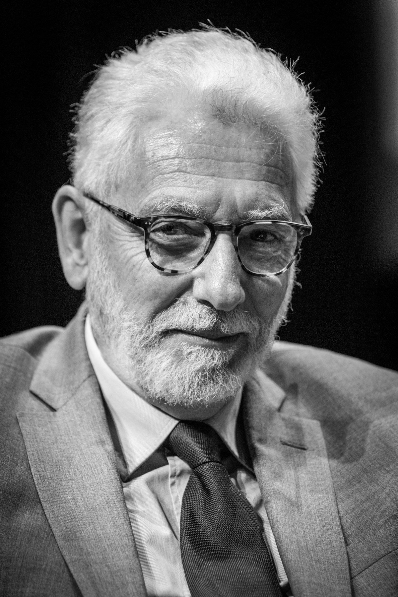
Descola : la nature des Modernes
Comment l’Occident a-t-il inventé « la nature » en séparant l’homme du monde ?
Ouvrir la pageReligion : série générale et technologiques
Kant : l’existence de Dieu comme nécessité morale
Pourquoi la raison pratique doit-elle postuler l’existence de Dieu, alors que la loi morale n’en a pas besoin ?
Ouvrir la page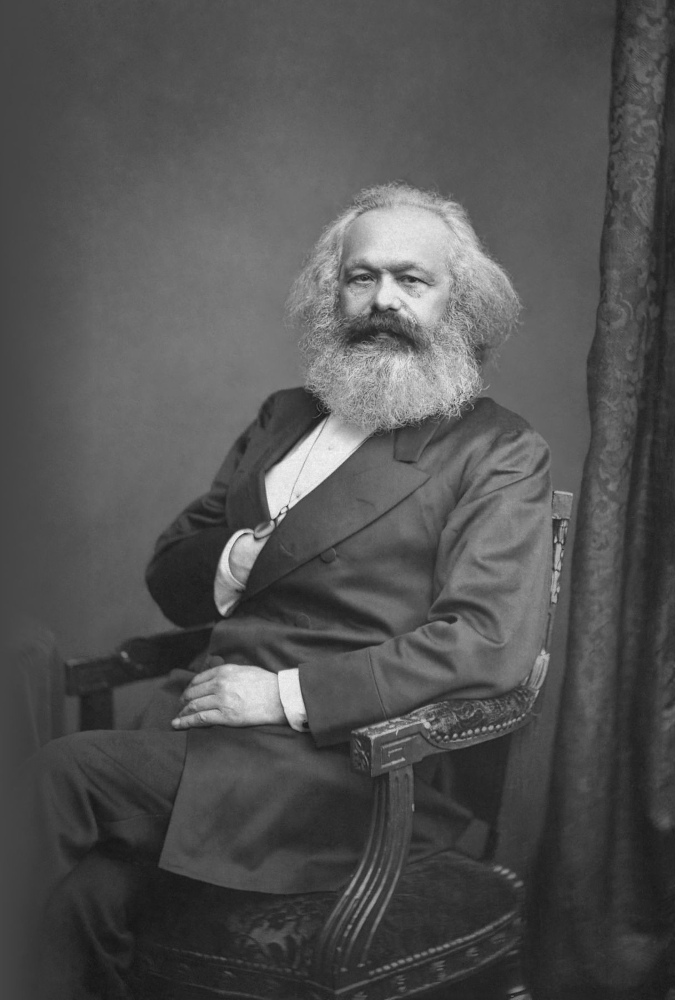
Marx : la religion est l’opium du peuple
La religion console les opprimés : est-ce une aide ou une illusion qui entretient l’oppression ?
Ouvrir la pageNietzsche : la mort de Dieu
Si Dieu est mort, que reste-t-il de l’égalité et de l’homme ?
Ouvrir la pageTechnique : série générale et technologiques
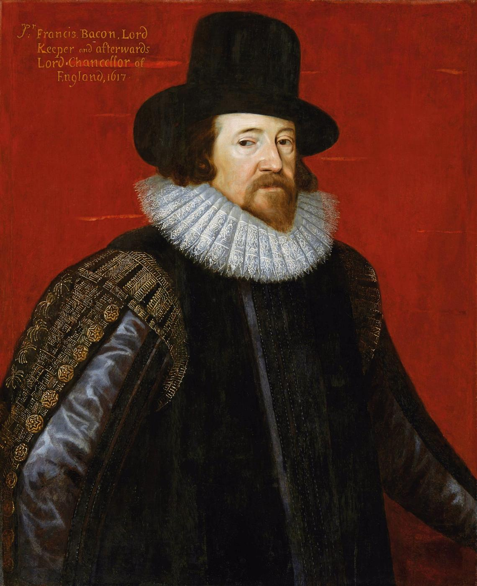
Bacon : vaincre la nature en lui obéissant
La science donne la puissance : on ne vainc la nature qu’en lui obéissant.
Ouvrir la page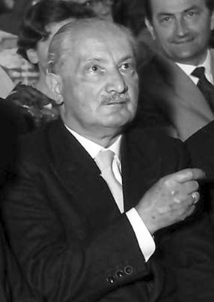
Heidegger : le Rhin, de fleuve à ressource
Une centrale dans le Rhin : la technique moderne réduit la nature à un stock d’énergie.
Ouvrir la page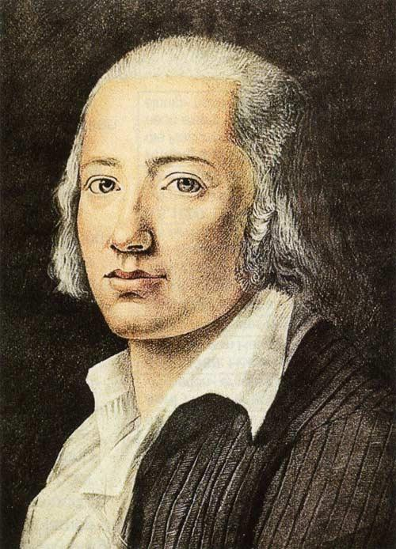
Hölderlin : le Rhin, fleuve libre
L’hymne au fleuve demi-dieu, contrepoint poétique du texte de Heidegger.
Ouvrir la pageArendt : animal laborans et homo faber
Qui est responsable de la perversion des fins et des moyens : l’outil, ou le travail ?
Ouvrir la page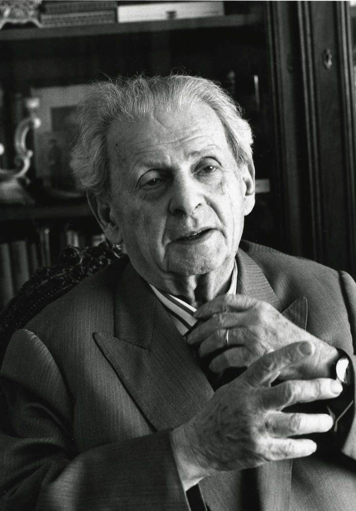
Lévinas : défendre l’homme contre la technique ?
La technique est dangereuse, mais la critiquer au nom des racines est-il légitime ?
Ouvrir la pageTemps : série générale
Bergson : l’exemple de l’eau sucrée
Attendre que le sucre fonde : que nous apprend ce petit fait sur le temps ?
Ouvrir la page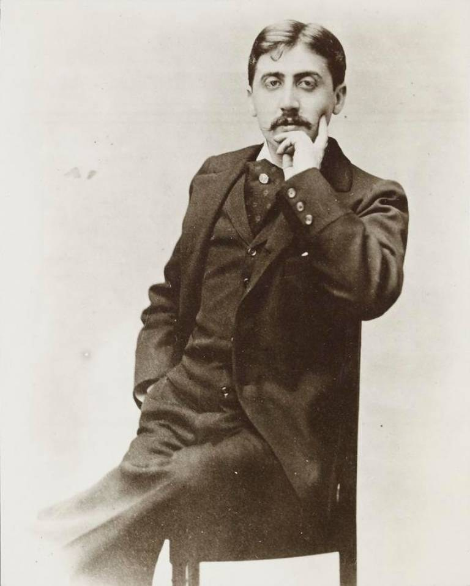
Proust : l’extra-temporalité
Comment un goût de madeleine peut-il nous faire échapper au temps ?
Ouvrir la pageEinstein : temps du physicien et temps psychologique
Le temps du philosophe est-il le même que celui du physicien ?
Ouvrir la pageSartre : passé et présent
Le passé est-il fixé une fois pour toutes ? Ou son sens dépend-il de ce que je projette ?
Ouvrir la pageTravail : série générale
Le travail : aliénation ou émancipation ?
De la Genèse à Russell : le travail comme contrainte, comme réalisation de soi, et l’éloge de l’oisiveté.
Ouvrir la pageLe travail
Onze textes, de saint Paul à Arendt, sur le devoir, la contrainte et la division du travail.
Ouvrir la pageGenèse 3 : le travail comme punition
Dans le récit biblique, le travail n’est pas un don : il suit la faute. Que dit cette origine du travail ?
Ouvrir la pageAristote : citoyen et travail
Peut-on être citoyen quand on doit travailler pour vivre ?
Ouvrir la page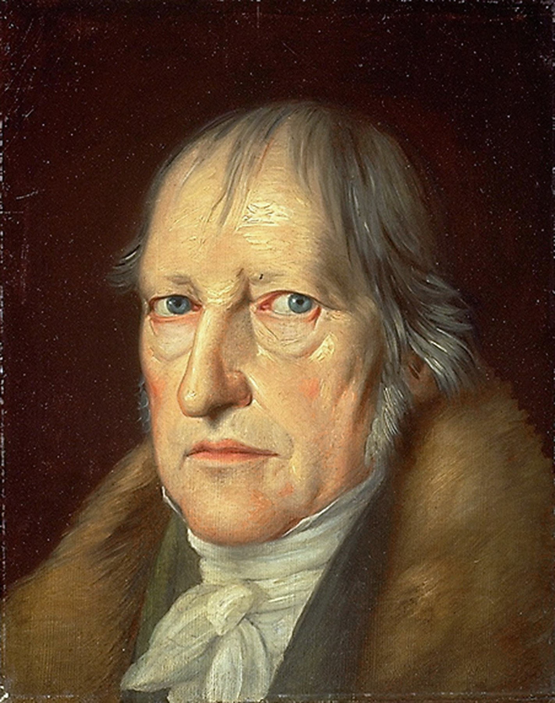
Hegel : le maître et le serviteur
Le maître qui jouit sans travailler est-il libre ? Le serviteur qui travaille est-il vraiment asservi ?
Ouvrir la pageMarx : la spécificité du travail humain
L’abeille construit des cellules admirables. Qu’est-ce qui distingue pourtant le pire architecte ?
Ouvrir la pageMarx : l’aliénation par le travail
Plus l’ouvrier produit, plus il s’appauvrit : comment le travail peut-il se retourner contre le travailleur ?
Ouvrir la pageRussell : éloge de l’oisiveté
Et si l’on travaillait quatre heures par jour ? Que ferions-nous du temps libre ?
Ouvrir la pageVérité : série générale et technologiques
Croyance, certitude, connaissance, conviction
Quatre façons de tenir une idée pour vraie : ce qui les distingue, et comment ne pas les confondre.
Ouvrir la pagePlaton : le mythe de la caverne
Des prisonniers prennent des ombres pour le réel : le chemin douloureux vers la vérité.
Ouvrir la pageDescartes : du doute au cogito
Du doute des sens au mauvais génie, jusqu’à la première certitude : « je pense, donc je suis ».
Ouvrir la pagePascal : le cœur et le pari
Les raisons du cœur, la foi comme don, puis le pari : gager que Dieu est.
Ouvrir la pageKant : mensonge et devoir
Faut-il dire la vérité même à un meurtrier ? Un devoir sans exception.
Ouvrir la pageRousseau : dire faux et mentir
Imposture, fraude, calomnie, fiction : toutes les paroles fausses ne se valent pas.
Ouvrir la pageHume : croyance raisonnable
Pourquoi croit-on que le soleil se lèvera demain ? Les faits ne se démontrent pas.
Ouvrir la pageL’art et la vérité
Neuf thèses sur l’art, avec arguments, exemples et pistes de réponse.
Ouvrir la pageRepères, méthodologies et frise chronologique
Repères conceptuels
Méthodologies
Série générale
Le jour de l’épreuve
Répartir les quatre heures, choisir son sujet, éviter les pièges et relire sa copie.
Ouvrir la pageConstruire une dissertation
Les huit étapes de la méthode, avec un brouillon interactif pour préparer sa copie.
Ouvrir la pageAuto-évaluer sa dissertation
Les cinq compétences de la grille académique et les paliers de la grille nationale, pour relire sa copie.
Ouvrir la pageConstruire une explication de texte
Les neuf étapes de la méthode, de la lecture analytique à la rédaction, avec un brouillon interactif.
Ouvrir la pageAuto-évaluer son explication de texte
Les quatre compétences de la grille académique et les paliers de la grille nationale, pour relire sa copie.
Ouvrir la pageSéries technologiques
Le jour de l’épreuve
Répartir les quatre heures, choisir son sujet, éviter les pièges et relire sa copie.
Ouvrir la pageConstruire une dissertation
Les huit étapes de la méthode, avec un brouillon interactif pour préparer sa copie.
Ouvrir la pageAuto-évaluer sa dissertation
Les cinq compétences de la grille académique et les paliers de la grille nationale, pour relire sa copie.
Ouvrir la pageSéries technologiques : explication de texte
Analyse, synthèse, commentaire : comment répondre aux questions de l’épreuve.
Ouvrir la pageAuto-évaluer son explication de texte
Les quatre compétences de la grille académique et les paliers de la grille nationale, pour relire ses réponses aux questions.
Ouvrir la pagePlans de cours
Le bonheur
Hédonisme, amour, stoïcisme et morale : qu’est-ce qu’une vie heureuse ?
Ouvrir la pageLa conscience
Conscience de soi et connaissance de soi : sommes-nous transparents à nous-mêmes ?
Ouvrir la pageLe devoir
Obligation, désir et morale : d’où vient le devoir, et que nous commande-t-il ?
Ouvrir la pageL’État
L’état de nature, le contrat social et la place de l’État : une dénaturation nécessaire ?
Ouvrir la pageL’inconscient
Ce qui échappe à la conscience : une hypothèse, ses preuves et ses critiques.
Ouvrir la pageLa justice
La justice comme vertu et comme institution : harmonie de la société et sentiment du juste.
Ouvrir la pageLe langage
Langage et langue, signe arbitraire, performatif, et la langue comme arme.
Ouvrir la pageLa liberté
Le plan de cours sur la liberté : choisir, déterminismes, objectivité et autonomie.
Ouvrir la pageLa nature
L’homme est-il un être naturel comme les autres ? Exception, maîtrise et limites de l’action sur la nature.
Ouvrir la pageLa religion
Définir la religion, prouver Dieu ou le sentir : raison, foi et critiques de la religion.
Ouvrir la pageScience et vérité
Correspondance, cohérence, idéalisme, induction et paradigmes : la science produit-elle la vérité ?
Ouvrir la pageLa technique
Transformer la nature selon nos fins : définition, pouvoir et limites de la technique.
Ouvrir la pageLe temps
Principe de génération et de corruption, durée vécue, temps objectif et espace-temps.
Ouvrir la pageLe travail
Entre aliénation et émancipation : contrainte, réalisation de soi et éloge de l’oisiveté.
Ouvrir la pageSe préparer et s’entraîner aux épreuves du bac
Pour se préparer : série générale et technologiques
Parcours dissertation
Les huit étapes pour passer du sujet à la copie, dans l’ordre, avec un suivi de votre progression.
Ouvrir la pageLire un sujet de dissertation
Formulations, petits mots et verbes de consigne : comprendre ce que le sujet demande avant d’y répondre.
Ouvrir la pageArgumenter
Thèse, arguments, exemples, raisonnements et erreurs à éviter : comment défendre une idée par des raisons.
Ouvrir la pageConstruire une problématique
De la question du sujet au problème : deux réponses sérieuses, chacune appuyée sur un argument.
Ouvrir la pageConstruire le plan
Trois parties qui répondent au problème, des arguments classés du plus faible au plus fort, et six sujets travaillés pas à pas.
Ouvrir la pageUtiliser une référence ou un exemple
Choisir une référence ou un exemple, l’introduire, l’expliquer et en tirer une synthèse, sur des sous-parties de corrigés.
Ouvrir la pageRédiger l’introduction
De la première réponse au problème, puis à l’annonce du plan, sur trois corrigés.
Ouvrir la pageRelier les parties : les transitions
Le bilan et le problème qui font passer d’une partie à la suivante.
Ouvrir la pageRédiger la conclusion
Reprendre les bilans des parties pour donner une réponse claire.
Ouvrir la pagePour s’entraîner
Série générale
Atelier : l’introduction de la dissertation
Écrivez une introduction étape par étape, évaluez-la avec une grille, comparez-la à un corrigé, puis enregistrez-la en PDF.
Ouvrir la pageAtelier dissertation
Un cahier de brouillon guidé : choisissez un sujet et construisez votre dissertation étape par étape.
Ouvrir la pageUne dissertation commentée
Une copie complète sur « Le devoir est-il une contrainte ? », avec en marge ce que fait chaque passage.
Ouvrir la pageRepérer le rôle des passages d’une dissertation
Des passages d’une copie, dans le désordre : à vous de reconnaître leur rôle (accroche, problématique, bilan…).
Faire l’exerciceAtelier explication de texte
Choisissez un texte et construisez votre explication en neuf étapes, avec le texte sous les yeux et un corrigé.
Ouvrir la pageSéries technologiques
Atelier : l’introduction de la dissertation
Écrivez une introduction étape par étape, évaluez-la avec une grille, comparez-la à un corrigé, puis enregistrez-la en PDF.
Ouvrir la pageAtelier dissertation
Un cahier de brouillon guidé : choisissez un sujet et construisez votre dissertation étape par étape (sujets des séries technologiques).
Ouvrir la pageUne dissertation commentée
Une copie complète sur « Le devoir est-il une contrainte ? », avec en marge ce que fait chaque passage.
Ouvrir la pageRepérer le rôle des passages d’une dissertation
Des passages d’une copie, dans le désordre : à vous de reconnaître leur rôle (accroche, problématique, bilan…).
Faire l’exerciceAtelier explication de texte
Choisissez un texte et répondez aux questions de l’épreuve (analyse, synthèse, commentaire), avec le texte sous les yeux et un corrigé.
Ouvrir la pageEMC
Pour approfondir et aller plus loin
Sociologie
Durkheim en sept textes
Le fait social, la contrainte, la morale, la solidarité organique et le suicide.
Ouvrir la pageMauss en trois textes
L’obligation sociale, le potlatch comme « fait social total » et les techniques du corps.
Ouvrir la pageWeber en trois textes
La sociologie compréhensive, les concepts collectifs et l’éthos capitaliste protestant.
Ouvrir la pageBourdieu en six textes
Champs, habitus, pouvoir des mots, goût et reproduction scolaire.
Ouvrir la pageDurkheim, Le Suicide : fiche de lecture
Le taux social des suicides, les trois types (égoïste, altruiste, anomique) et les remèdes proposés.
Ouvrir la pageRosa, Aliénation et accélération : fiche de lecture
Les trois formes d’accélération, le « totalitarisme » du temps, les cinq formes d’aliénation et la résonance.
Ouvrir la pageDémocratie et sciences
Préparer le concours commun du réseau ScPo
Kant, Projet de paix perpétuelle : fiche de lecture
Articles préliminaires et définitifs, garantie de la nature, droit cosmopolitique et fédération d’États libres.
Ouvrir la pageBadie, L’Art de la paix : fiche de lecture
Neuf vertus pour penser la paix : humaine, subjective, systémique, globale, hospitalière, éduquée.
Ouvrir la pageLefranc, Comment sortir de la violence ? : fiche de lecture
Justice transitionnelle, commissions de vérité, réparations et paix « ordinaire » : un échec moral, un succès politique.
Ouvrir la pageMichaud, La Violence : fiche de lecture
Définir la violence, son histoire, ses formes politiques, et les éclairages de la sociologie et de la philosophie.
Ouvrir la pageMbembe, Politiques de l’inimitié : fiche de lecture
Sortie de la démocratie, société d’inimitié, nécropolitique et pharmacie de Fanon.
Ouvrir la pageFraser, Qu’est-ce que la justice sociale ? : fiche de lecture
Redistribution et reconnaissance, parité de participation, modèle statutaire et espaces publics.
Ouvrir la pageWalzer, Guerres justes et injustes : fiche de lecture
Contre le réalisme, théorie de l’agression, immunité des non-combattants et urgence suprême.
Ouvrir la pageFreud, Einstein, Pourquoi la guerre ? : fiche de lecture
Correspondance de 1932 : droit et force, pulsions de vie et de mort, culture contre la guerre.
Ouvrir la pageBenjamin, Pour une critique de la violence : fiche de lecture
Droit naturel et positif, violence fondatrice et conservatrice, moyens purs, violence divine.
Ouvrir la pageFanon, Les Damnés de la terre : fiche de lecture
Monde colonial, violence et libération, pièges de la bourgeoisie nationale, guerre et troubles mentaux.
Ouvrir la pageAron, Penser la guerre, Clausewitz : fiche de lecture
L’étrange trinité, la Formule, les héritiers de Clausewitz et l’âge nucléaire (tomes 1 et 2).
Ouvrir la page